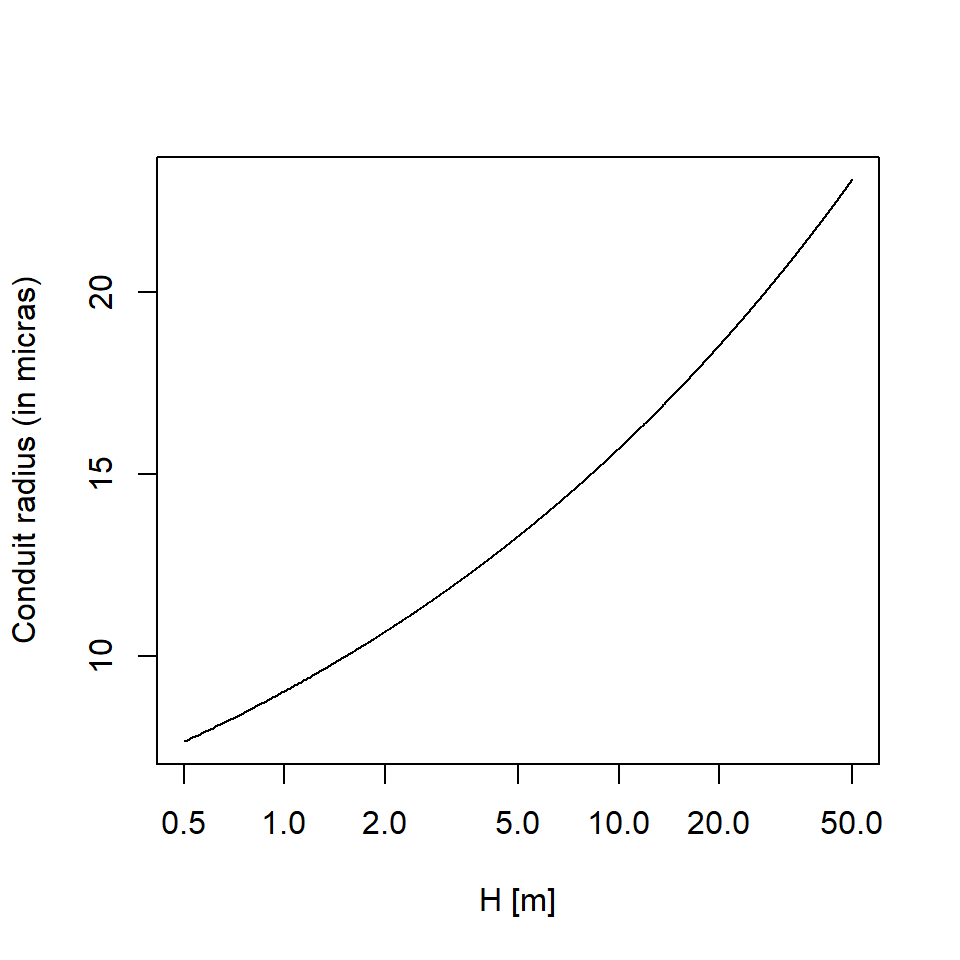
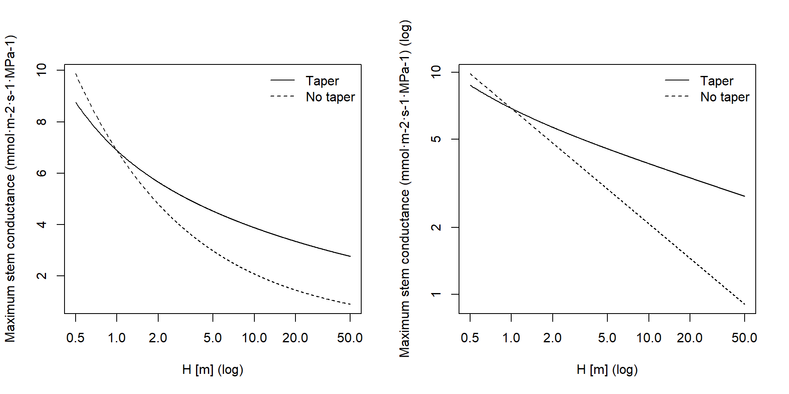

A Model parametrization
Package medfate provides routines to estimate them from a minimum set of input parameters. The whole process of estimation of those parameters is done automatically in functions spwbInput() and forest2spwbInput(), with the user controlling the process through the species parameter table input (e.g., SpParamsMED) an object control (see default values in defaultControl()). In the following we detail the calculations and present individual functions that perform partial calculations.
A.1 Plant Hydraulics
A.1.1 Vulnerability curves
Leaf and xylem vulnerability curves are often described using \(\Psi_{50}\), the water potential at which hydraulic conductance is half of maximum. As noted above, parameter \(d\) in eq. (11.1) is the water potential \(\Psi\) at which \(k_{x}(\Psi)/k_{x,max} = e^{-1} = 0.367\) (and the same for eq. (11.2)). Hence, the two definitions do not match. Using the definition of \(\Psi_{50}\) in eq. (11.1) we have:
\[\begin{equation}
0.5 = e^{-((\Psi_{50}/d)^c)}
\end{equation}\]
from which we obtain that the value for parameter \(d\) should be:
\[\begin{equation}
d = \frac{\Psi_{50}}{(-ln(0.5))^{1/c}}= \frac{\Psi_{50}}{0.69314^{1/c}}
\end{equation}\]
Hence, this operation should be used when specifying this parameter from \(\Psi_{50}\). Vulnerability curves for root xylem are less common than for stem xylem. If these values are missing, functions spwbInput() and forest2spwbInput() will use for \(c\) the same value as in stems, and for \(d\) half the value of that of stems (J. S. Sperry, Venturas, et al. 2016). If the values for leaves are missing, initialization functions will use for \(c\) the same value as in stems, and for \(d\) 66% of the value for stems.
Rhizosphere conductance is regulated in the model using the van Genuchten function given in eq. (11.3), and parameters \(n\) and \(\alpha\) for each soil layer were already available from soil initialization (i.e. function soil()):
s = soil(defaultSoilParams(3))
s$VG_n## [1] 1.267359 1.303861 1.303861s$VG_alpha## [1] 147.32468 89.16112 89.16112Aboveground and belowground stem maximum conductance values at the plant level (\(k_{s, max}\) and \(k_{r, max}\)) will not be normally available and the same for the rhizosphere (\(k_{rh, max}\)).
A.1.2 Leaf maximum conductance
Leaf maximum conductance (\(k_{l, max}\), in \(mmol \cdot m^{-2} \cdot s^{-1} \cdot MPa^{-1}\)) is an input parameter that should be provided for each species. When missing, leaf maximum hydraulic conductance is assumed \(k_{l, max}=6\) for conifers and \(k_{l, max}=8\) for angiosperms (Sack and Holbrook 2006).
A.1.3 Stem xylem maximum conductance
Estimation of maximum stem conductance (\(k_{s,max}\), in \(mmol \cdot m^{-2} \cdot s^{-1} \cdot MPa^{-1}\)) is done by function hydraulics_maximumStemHydraulicConductance() and follows the work by Savage et al. (2010), Olson et al. (2014) and Christoffersen et al. (2016). Calculations are based on tree height and two species-specific parameters: maximum sapwood reference conductivity (\(K_{s,max,ref}\)) and the ratio of leaf area to sapwood area (\(A_{l}/A_{s}\); Al2As in SpParamsMED), i.e. the inverse of the Huber value \(H_v\).
The reference value for maximum sapwood conductivity \(K_{s,max,ref}\) is assumed to have been measured on a terminal branch of a plant of known height \(H_{ref}\). If our target plant is very different in height, the conduits of terminal branches will have different radius and hence conductivity. We correct the reference conductivity to the target plant height using the following empirical relationship, developed by Olson et al. (2014) between tree height and diameter of conduits for angiosperms and the equation described by Christoffersen et al. (2016): \[\begin{eqnarray} 2 \cdot r_{int,H}&=& 10^{1.257+(0.24\cdot log_{10}(H))} \\ 2 \cdot r_{int,ref}&=&10^{1.257+(0.24\cdot log_{10}(H_{ref}))}\\ K_{s,max,cor}&=&K_{s,max,ref}\cdot (r_{int,H}/r_{int,ref})^{2} \end{eqnarray}\] Where \(r_{int,H}\) is the radius of conduits for a terminal branch of a tree of height \(H\) and \(r_{int,ref}\) is the corresponding radius for a tree of height \(H_{ref}\) (\(H\) and \(H_{ref}\) are measured in m). The form of the empirical relationship by Olson et al. (2014) is:

Let’s consider an example for a Quercus ilex target tree of 4m height and where species-specific conductivity \(K_{s,max,ref} = 0.77\) is the apical value for trees of \(H_{ref} = 6.6\) m (in , values of \(H_{ref}\) are taken from median height values; see parameter Hmed in SpParamsMED). The corrected conductivity for a tree of height 4 m will be a bit lower than that of the reference height:
xylem_kmax = 0.77
H = 400 # in cm
Href = 660 # in cm
f = hydraulics_referenceConductivityHeightFactor(Href, H);
f## [1] 0.7863352xylem_kmax_cor = xylem_kmax * f
xylem_kmax_cor## [1] 0.6054781Once the reference conductivity is corrected, the maximum stem conductance without accounting for conduit taper is:
\[\begin{equation}
k_{s,max, notaper}=\frac{1000}{0.018} \frac{K_{s,max,cor}\cdot A_{s}}{H\cdot A_{l}}
\end{equation}\]
where \(H\) is the tree height (here in m), \(A_{s}\) is the sapwood area, \(A_{l}\) is the leaf area and 1000/0.018 is a factor used to go from kg to mmol. The ratio \(A_{l}/A_{s} = 1/H_v\) is a fixed species parameter in soil water balance calculations (see parameter Al2As), but becomes variable when simulating plant growth. Let’s assume that Quercus ilex the leaf to sapwood area ratio is \(A_{l}/A_{s} = 2512\). The maximum (leaf-specific) stem conductance without taper (\(k_{s, max, notaper}\)) for the tree of 4 m height is then:
Al2As = 2512
kstemmax = hydraulics_maximumStemHydraulicConductance(xylem_kmax,
Href, Al2As, H, angiosperm = TRUE,taper = FALSE)
kstemmax## [1] 3.347698In order to consider taper of xylem conduits we calculate the whole-tree conductance per unit leaf area (\(k_{s, max, taper}\)) as described in Christoffersen et al. (2016): \[\begin{equation} k_{s, max, taper}=\frac{1000}{0.018} \cdot \frac{K_{s,max,pet}\cdot A_{s}}{H\cdot A_{l}}\cdot \chi_{tap:notap,ag}(H) \end{equation}\] where \(K_{s,max,pet}\) is the conductivity at the petiole level and \(\chi_{tap:notap,ag}(H)\) is the taper factor accounting for the decrease in the xylem conduits diameter with the height, from the petiole to base of the trunk, which mitigates the negative effects of height on the hydraulic safety. The conductivity at the petiole level is obtained from \(K_{s,max,ref}\) using again: \[\begin{equation} K_{s,max,pet} = K_{s,max,ref}\cdot (r_{int, pet}/r_{int,ref})^{2} \end{equation}\] where \(r_{int, pet}\) is the radius of the petiole in the model of Savage et al. (2010). Christoffersen et al. (2016) use \(r_{int, pet} = 10\) \(\mu m\) but we define it as the radius of apical conduits in a tree of 1 m height:
hydraulics_terminalConduitRadius(100.0)## [1] 9.035871\(\chi_{tap:notap,ag}(H)\) is calculated as described in the Appendix 1 section of Christoffersen et al. (2016) (see also Savage et al. (2010)). The following figure shows the value of \(\chi_{tap:notap,ag}\) for different heights:

Note that, since \(\chi_{tap:notap,ag}(1) = 3.82\) (indicated using grey dashed lines in the last figure), the equation of maximum conductance with taper would give a higher conductance than the equation without taper for a tree of 1 m height, which is supposed to have a conductance equal to conductivity. To solve this issue we define the taper factor as \(\chi_{tap:notap,ag}(H)/\chi_{tap:notap,ag}(1)\): \[\begin{equation} k_{s, max, taper}=\frac{1000}{0.018} \cdot \frac{K_{s,max,pet}\cdot A_{s}}{H\cdot A_{l}}\cdot \frac{\chi_{tap:notap,ag}(H)}{\chi_{tap:notap,ag}(1)} \end{equation}\] The maximum stem conductance with taper (\(k_{s, max, taper}\)) of a Q. ilex tree of 4 m height, calculated with this second equation, is:
kstemmax_tap = hydraulics_maximumStemHydraulicConductance(xylem_kmax,
Href, Al2As, H, angiosperm = TRUE, taper = TRUE)
kstemmax_tap## [1] 4.764396The next two plots show the variation of \(k_{s,max}\) for Q. ilex depending on the tree height and with/without considering taper of conduits. The plot on the right (both axes in log) show the slope of the dependency of conductance with height in both cases:

A.1.4 Root xylem maximum hydraulic conductance
To obtain maximum root xylem conductance (\(k_{r, max}\), in \(mmol \cdot m^{-2} \cdot s^{-1} \cdot MPa^{-1}\)), one option taken by Christoffersen et al. (2016) is to assume that minimum stem resistance (inverse of maximum conductance) represents a fixed proportion of the minimum total tree (stem+root) resistance. A value 0.625 (i.e. 62.5%) suggested by these authors leads to maximum total tree conductance for our Q. ilex tree being:
ktot = kstemmax*0.625
ktot## [1] 2.092311and the maximum root xylem conductance would be therefore:
krootmax = 1/((1/ktot)-(1/kstemmax))
krootmax## [1] 5.579497Now, we need to divide total maximum conductance of the root system xylem among soil layers we need weights inversely proportional to the length of transport distances (J. S. Sperry, Venturas, et al. 2016). Vertical transport lengths can be calculated from soil depths and radial spread can be calculated assuming cylinders with volume proportional to the proportions of fine root biomass. Let’s assume a soil with three layers:
d = s$dVec
d## [1] 300 700 1000The proportion of fine roots in each layer, assuming a linear dose response model, will be:
Z50 = 200
Z95 = 1500
v1 = root_ldrDistribution(Z50,Z95, d)
v1## [,1] [,2] [,3]
## [1,] 0.6661036 0.2784153 0.05548106Having this information, the calculation of root length (i.e. the sum of vertical and radial lengths) to each layer (\(L_j\)) is done using function root_rootLength():
rl = root_rootLengths(v1, d)
rl## [1] 2150.000 1496.481 1816.149where lengths are in mm. The proportion of total root xylem conductance corresponding to each layer (\(w_j\)) is given by root_xylemConductanceProportions():
w1 = root_xylemConductanceProportions(v1, d)
w1## [1] 0.2762029 0.3968217 0.3269754Xylem conductance proportions can be quite different than the fine root biomass proportions. This is because radial lengths are largest for the first top layers and vertical lengths are largest for the bottom layers. The maximum root xylem conductances of each layer will be the product of maximum total conductance of root xylem and weights:
w1*krootmax## [1] 1.541073 2.214065 1.824358In medfate we calculate maximum root xylem conductance using a reference root xylem conductivity value (\(K_{r,max,ref}\)):
\[\begin{equation}
k_{r,max}=\frac{1000}{0.018} \cdot \sum_{j}{\frac{w_j \cdot K_{r,max,ref}\cdot A_{s}}{L_j\cdot A_{l}}}
\end{equation}\]
where \(w_j\) are root xylem conductance proportion of layer \(j\) and \(L_j\) is the root length (in m) to layer \(j\). Note that here we use weights \(w_j\) assuming they represent proportions of total sapwood area that come from each layer (i.e. the longer the path the larger the proportion of sapwood area). This calculation is made available by function hydraulics_maximumRootHydraulicConductance(). When \(K_{r,max,ref}\) is missing, then we assume that \(K_{r,max,ref} = K_{x,max,ref}\). Let’s consider the same Q. ilex tree of 4m height as before. If we specify root xylem specific conductivity as \(K_{r,max,ref} = K_{s,max,ref} =0.77\) we have:
rootxylem_kmax = 0.77
krootmax = hydraulics_maximumRootHydraulicConductance(rootxylem_kmax, Al2As,
v1, d)
krootmax## [1] 9.769308The maximum root xylem conductances of each layer would be:
krootmaxvec = w1*krootmax
krootmaxvec## [1] 2.698311 3.876673 3.194324and the fraction of total xylem resistance due to stem would be:
(1/kstemmax)/((1/kstemmax)+(1/krootmax))## [1] 0.7447818In contrast with the approach of Christoffersen et al. (2016), in this approach the root maximum conductance depends root length and distribution, and is not a fixed fraction of stem maximum conductance. Assuming constant root length, then the proportion of total resistance due to the stem will increase with tree height (Magnani, Mencuccini, and Grace 2000):

where the horizontal gray line indicates the value of 62.5%. Of course rooting depth also increases with tree age, but young trees have higher root-to-shoot ratios than older ones. Hence, a root maximum conductance that is not fixed but increases with age seems a priori more realistic. Moreover, Christoffersen et al. (2016) justify the value of 62.5% from a study which quantified total aboveground and belowground resistance in tropical trees (Fisher et al. 2006) under near-saturated (wet season) conditions, but values of belowground resistance reported in this study for wet conditions and trees of 30 m height are around 13%, which equals to 87% fraction of aboveground resistance. On the other hand, while rooting depths are limited by soil depth, lateral root length increases with age and, hence, the model could be made more realistic if this is taken into account and the curve above would probably saturate at lower percentages.
A.1.5 Rhizosphere maximum hydraulic conductance
Maximum rhizosphere conductance (\(k_{rh, max}\), in \(mmol \cdot m^{-2} \cdot s^{-1} \cdot MPa^{-1}\)) is difficult to measure directly, as it depends on the rhizosphere (i.e. fine root) surface in each soil layer, and will probably always be a parameter to be calibrated. Instead of trying to estimate rhizosphere surface from root architecture (Sperry et al. 1998), we follow J. S. Sperry, Wang, et al. (2016) and determine the maximum rhizosphere conductance in each layer from an inputed ‘average percentage rhizosphere resistance’. The percentage of continuum resistance corresponding to the rhizosphere is calculated from the vulnerability curves of stem, root and rhizosphere at the same water potential. The average resistance is found by evaluating the percentage for water potential values between 0 and \(\Psi_{crit}\). The following figure illustrates how the supply function, for different soil water potentials, is affected by increasing values of the average percentage of rhizosphere resistance:

J. S. Sperry, Wang, et al. (2016) found average percentages of rhizosphere resistance around 67%, but these exceptionally-high values were probably a consequence of using an unsegmented supply function (i.e. single vulnerability curve for roots, stem and leaves). If we specify a 15% of average resistance in the rhizosphere (see parameter averageFracRhizosphereResistance in function defaultControl()), the maximum rhizosphere conductance values for the three layers are found calling:
krmax = rep(0,3)
krmax[1]= hydraulics_findRhizosphereMaximumConductance(15,
s$VG_n[1],s$VG_alpha[1],
krootmax, rootc,rootd,
kstemmax, stemc, stemd,
kleafmax, leafc, leafd)
krmax[2] = hydraulics_findRhizosphereMaximumConductance(15,
s$VG_n[2],s$VG_alpha[2],
krootmax, rootc,rootd,
kstemmax, stemc, stemd,
kleafmax, leafc, leafd)
krmax[3] = hydraulics_findRhizosphereMaximumConductance(15,
s$VG_n[3],s$VG_alpha[3],
krootmax, rootc,rootd,
kstemmax, stemc, stemd,
kleafmax, leafc, leafd)
krmax## [1] 276438796 97039144 97039144The values are the same because the texture of the three layers is the same in this case. If we take into account root distribution, actual maximum rhizosphere conductance values are:
krmax*v1## [,1] [,2] [,3]
## [1,] 184136883 27017184 5383835A.1.6 Pressure-volume curves
Parameters of the pressure-volume curve (i.e. \(\pi_{0,stem}\) and \(\epsilon_{stem}\)) for leaf and stem symplastic tissue are required for each species. When parameters for stem tissue are missing, medfate estimates them from wood density following Christoffersen et al. (2016): \[\begin{equation} \pi_{0,stem} = 0.52 - 4.16 \cdot \rho_{wood} \end{equation}\]
\[\begin{equation} \epsilon_{stem} = \sqrt{1.02 \cdot e^{8.5\cdot \rho_{wood}}-2.89} \end{equation}\]A.1.7 Plant water storage capacity
The water storage capacity of sapwood tissue per leaf area unit (\(V_{sapwood}\); in \(m^3 \cdot m^{-2}\)) can be estimated as the product of stem height (\(H\) in m) and Huber value (\(H_v\); ratio of sapwood area to leaf area in \(m^2 \cdot m^{-2}\)) times a factor to account for the non-cylindrical shape (http://www.fao.org/forestry/17109/en/): \[\begin{equation} V_{sapwood} = 0.48 \cdot H \cdot H_v \cdot \Theta_{sapwood} \end{equation}\] \(\Theta_{sapwood}\) is sapwood porosity (\(cm^3\) of water per \(cm^3\) of sapwood tissue), which can be estimated from wood density (\(\rho_{wood}\); in \(g \cdot cm^{-3}\)): \[\begin{equation} \Theta_{sapwood} = 1 - (\rho_{wood} / 1.54) \end{equation}\] where the density of wood substance can be assumed to be fixed and equal to 1.54 \(g \cdot cm^{-3}\) (Dunlap 1914). For example, wood densities ranging from 0.443 to 1.000 \(g \cdot cm^{-3}\) result in sapwood porosity values between 0.35 and 0.71.
Water storage capacity of leaf tissue per leaf area unit (\(V_{leaf}\); in \(m^3 \cdot m^{-2}\)) can be estimated as the product of specific leaf area (SLA; in \(m^2 \cdot kg^{-1}\)) and leaf density (\(\rho_{leaf}\); in \(g \cdot cm^{-3}\)): \[\begin{equation} V_{leaf} = \frac{10^{-3}}{SLA \cdot \rho_{leaf}} \cdot \Theta_{leaf} \end{equation}\] \(\Theta_{leaf}\) is leaf porosity (\(cm^3\) of water per \(cm^3\) of leaf tissue), which can be estimated from leaf density: \[\begin{equation} \Theta_{leaf} = 1 - (\rho_{leaf} / 1.54) \end{equation}\] where the density of wood substance can be assumed to be fixed and equal to 1.54 \(g \cdot cm^{-3}\) (Dunlap 1914).
For example, let’s calculate the stem and leaf water capacity for a Q. ilex tree of 15 m height:
wd = 1.0
Al2As = 2512
H = 1500 # 15 m
hydraulics_stemWaterCapacity(Al2As, H, wd)## [1] 0.001005046ld = 0.7
SLA = 5.870
hydraulics_leafWaterCapacity(SLA, ld)## [1] 0.0001327463A.2 Stomatal regulation and photosynthesis
A.2.1 Stomatal conductance
Maximum stomatal conductance (\(g_{swmax}\)) is an input parameter for each species. When species-specific values are missing, the following relation with maximum leaf hydraulic conductance (\(k_{l, max}\)) is used (Mencuccini 2003): \[\begin{equation} g_{swmax} = e^{4.797 + 0.633\cdot \log(k_{l, max})} \end{equation}\]
Species values for \(g_{swmin}\) were taken from Duursma et al. (2018). Following the same authors, a value of \(g_{swmin}\) = 0.0045 \(mol H_2O \cdot s^{-1} \cdot m^{-2}\) is taken as default, when species-specific values are missing.
A.2.2 Photosynthesis
Rubisco’s maximum carboxylation rate at 25ºC (\(V_{max, 298}\), in \(\mu mol CO_2 \cdot s^{-1} \cdot m^{-2}\)) is a required input parameter for each species (Vmax298), and if its value is missing a default value of 100 \(\mu mol CO_2 \cdot s^{-1} \cdot m^{-2}\) is used. The maximum rate of electron transport at the same temperature (\(J_{max, 298}\)) can be provided by the user (Jmax298) but, if not, it is estimated from \(V_{max, 298}\) using Walker et al. (2014):
Bibliography
Christoffersen, Bradley O., Manuel Gloor, Sophie Fauset, Nikolaos M. Fyllas, David R. Galbraith, Timothy R. Baker, Lucy Rowland, et al. 2016. “Linking hydraulic traits to tropical forest function in a size-structured and trait-driven model (TFS v.1-Hydro).” Geoscientific Model Development Discussions 0 (June):1–60. https://doi.org/10.5194/gmd-2016-128.
Dunlap, F. 1914. “Density of wood substance and porosity of wood.” Journal of Agricultural Research II (6):423–28.
Duursma, Remko A., Christopher J. Blackman, Rosana Lopéz, Nicolas K. Martin-StPaul, Hervé Cochard, and Belinda E. Medlyn. 2018. “On the minimum leaf conductance: its role in models of plant water use, and ecological and environmental controls.” New Phytologist, no. September. https://doi.org/10.1111/nph.15395.
Fisher, R A, Mathew Williams, L R Do Vale, A L Da Costa, and Patrick Meir. 2006. “Evidence from Amazonian forests is consistent with a model of isohydric control of leaf water potential.” Plant, Cell and Environment 29 (2):151–65.
Magnani, F., M. Mencuccini, and J. Grace. 2000. “Age-related decline in stand productivity: The role of structural acclimation under hydraulic constraints.” Plant, Cell and Environment 23 (3):251–63. https://doi.org/10.1046/j.1365-3040.2000.00537.x.
Mencuccini, Maurizio. 2003. “The ecological significance of long-distance water transport : short-term regulation , long-term acclimation and the hydraulic costs of stature across plant life forms.” Plant, Cell & Environment 26:163–82. https://doi.org/10.1046/j.1365-3040.2003.00991.x.
Olson, Mark E., Tommaso Anfodillo, Julieta A. Rosell, Giai Petit, Alan Crivellaro, Sandrine Isnard, Calixto León-Gómez, Leonardo O. Alvarado-Cárdenas, and Matiss Castorena. 2014. “Universal hydraulics of the flowering plants: Vessel diameter scales with stem length across angiosperm lineages, habits and climates.” Ecology Letters 17 (8):988–97. https://doi.org/10.1111/ele.12302.
Sack, Lawren, and N. Michele Holbrook. 2006. “Leaf Hydraulics.” Annual Review of Plant Biology 57 (1):361–81. https://doi.org/10.1146/annurev.arplant.56.032604.144141.
Savage, V M, L P Bentley, B J Enquist, J S Sperry, D D Smith, P B Reich, and E I von Allmen. 2010. “Hydraulic trade-offs and space filling enable better predictions of vascular structure and function in plants.” Proceedings of the National Academy of Sciences of the United States of America 107 (52):22722–7. https://doi.org/10.1073/pnas.1012194108.
Sperry, John S., F R Adler, G S Campbell, and J P Comstock. 1998. “Limitation of plant water use by rhizosphere and xylem conductance: results from a model.” Plant, Cell & Environment 21:347–59. http://onlinelibrary.wiley.com/doi/10.1046/j.1365-3040.1998.00287.x/full.
Sperry, John S., Martin D. Venturas, William R. L. Anderegg, Maurizio Mencuccini, D. S. Mackay, YuJie Wang, and David M Love. 2016. “Predicting stomatal responses to the environment from the optimization of photosynthetic gain and hydraulic cost.” Plant Cell and Environment 40 (6):816–30. https://doi.org/10.1111/pce.12852.
Sperry, John S., Yujie Wang, Brett T. Wolfe, D. Scott Mackay, William R L Anderegg, Nate G. Mcdowell, and William T. Pockman. 2016. “Pragmatic hydraulic theory predicts stomatal responses to climatic water deficits.” New Phytologist 212:577–89. https://doi.org/10.1111/nph.14059.
Walker, Anthony P., Andrew P. Beckerman, Lianhong Gu, Jens Kattge, Lucas A. Cernusak, Tomas F. Domingues, Joanna C. Scales, Georg Wohlfahrt, Stan D. Wullschleger, and F. Ian Woodward. 2014. “The relationship of leaf photosynthetic traits - Vcmax and Jmax - to leaf nitrogen, leaf phosphorus, and specific leaf area: A meta-analysis and modeling study.” Ecology and Evolution 4 (16):3218–35. https://doi.org/10.1002/ece3.1173.